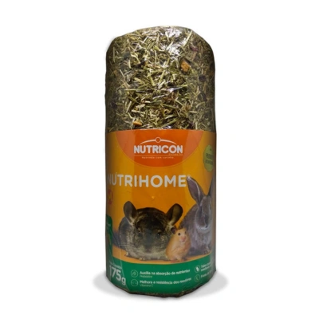

Tubo Comestível Nutrihome para Roedores

Preço: R$ 31,99
- Indicada para roedores;
- Produto composto por sementes encontradas na natureza, feno de alfafa e o alimento completo;
- Em formato de tubo onde ele pode brincar dentro e ao mesmo tempo comer;
- Contém fonte de fibras e ajuda no desgaste dos dentes e das unhas;
- Disponível em embalagens com 65g, 175g e 360g.